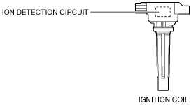
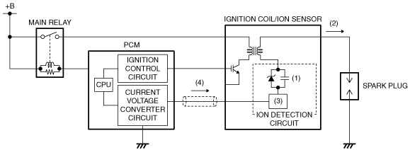

• Detects ion generation in the combustion chamber for detecting pre-ignition.
• Detects ions, which occur due to fuel combustion as current, by applying bias voltage to the spark plug, which is amplified in the ignition coil internal circuit and sent to the PCM.
Construction
• Built into the ignition coil.

am3uun00001709
Operation
• Accumulates the secondary current of the ignition coil in bias condenser (1), and detects ion current (2) by applying the bias voltage to the spark plug.
• Pulls in current (4), increased by current amplification circuit (3), to the ignition coil from the PCM.
• The PCM measures/converts the current sent to the ignition coil and monitors.

am2zzn00003365
Ion generation mechanism
• Ions are generated based on: fuel combustion = chemical reaction / disassociation. The generated negative ions move to the center electrode of the spark plug to which bias voltage is applied, and positive ions move to the grounded engine wall surface, then current flows from the spark plug to the ignition coil.